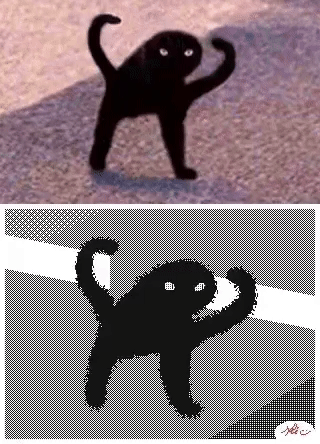

Lab 11: Advanced Block-Level Styling

Big Ideas
For this lab we are experimenting with block-level styling.
challenges
We had a lot of challenges for this lab because we were not sure how to get the contents in the correct positions and had to refer back to the lecture several times. I still am unable to get my proportions to stick when the size of the window changes.
results
Here are the results of my code.